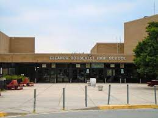
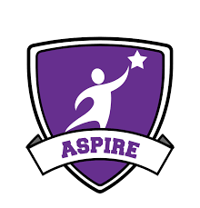

I went to Eleanor Roosevelt High School. I was a part of the Science and Technology(ST) Program. It focused on getting us college ready for a STEM related major. It allowed us to take excelerated course work and work on a research project.


As a part of my research project for the ST program, I worked as a high school intern at the Johns Hopkins Applied Physics Lab. I worked on normalizing sensor data from the Parker Solar Probe under Dr. Edward Gaddy.
Links to Images
- https://patch.com/maryland/greenbelt/roosevelt-moves-up-in-state-and-national-rankings
- https://secwww.jhuapl.edu/stem/aspire